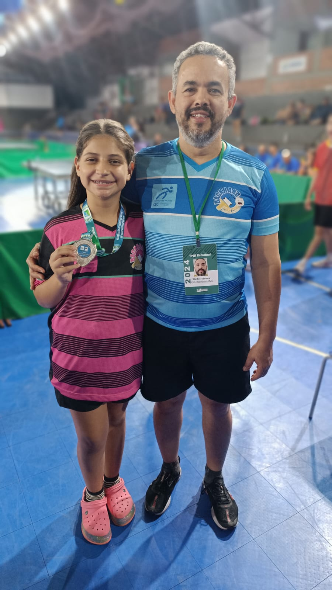
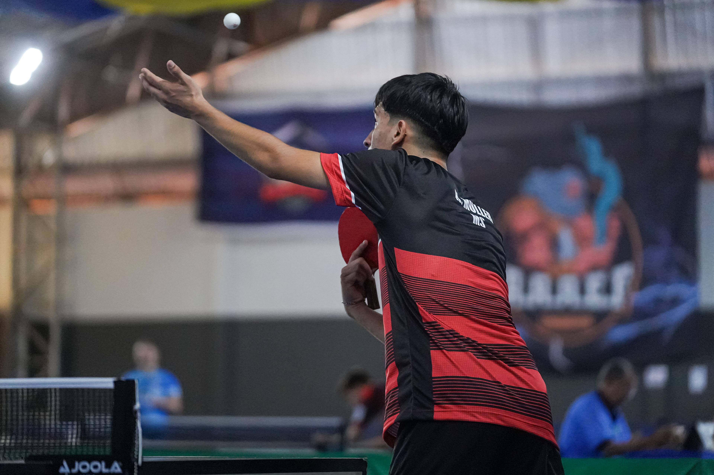
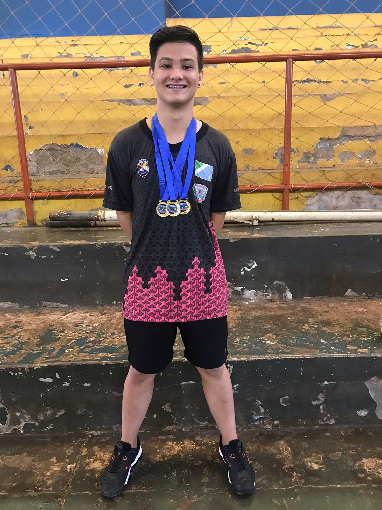

Nome do atleta: Estela Souza
Para mim o tênis de mesa é um esporte lindo, que te mostra um olhar além da competitividade. Também foi uma linda porta que se abriu para mim para que eu pudesse aprender muitas coisas, conhecer lugares maravilhosos, fazer amizades e vivenciar experiências incríveis!! Sou muito grata por esse esporte e por tudo que ele me proporcionou.
Nome do atleta: Manuela Souza
Para mim ser atleta é mais do que jogar é criar laços e vínculos mais também o tempo leva a perfeição também a frequência com que se treina se evolui. Nessa foto eu estava muito feliz porque ganhei minha primeira medalha na categoria sub 11 da Federação de Tênis de Mesa do Mato Grosso do Sul.
Nome do atleta: Hyan Muller
O tênis de mesa para mim, Hyan, é muito mais do que um simples esporte. Ele é uma paixão que me desafia, me ensina disciplina e me proporciona momentos de superação. A cada jogo, sinto a adrenalina de estar no momento presente, focado em cada movimento, em cada jogada. Além disso, o tênis de mesa tem um poder de me conectar com outras pessoas, seja em competições ou em simples treinos. Ele é uma forma de expressão, onde posso mostrar minha dedicação e habilidade, ao mesmo tempo em que aprendo a lidar com as vitórias e as derrotas. No fundo, é uma verdadeira escola de vida, que me ensina a ser melhor a cada dia.
Nome do atleta: Júlio Silva
O tênis de mesa para mim foi algo que marcou a minha vida, e é até difícil de explicar o sentimento que esse esporte me trás. Desde os treinos, as competições, o processo de evolução, toda a trajetória que você percorre, as derrotas, as primeiras vitórias, as primeiras conquistas, viver isso tudo é extremamente satisfatório. O quanto você evolui mentalmente e fisicamente é inexplicável, o sentimento quando você está na mesa, é algo que somente quem participa do esporte sabe, a guerra mental e física a cada ponto, a vibração, a torcida, tudo isso é maravilhoso de se viver. Sou grato ao tênis de mesa por tudo aquilo que conquistei, não somente as medalhas, troféus ou campeonatos, mas sim a cada amizade feita, a cada pessoa que pude ajudar e a cada momento vivido dentro desse esporte maravilhoso, com certeza levarei isso para minha vida toda.